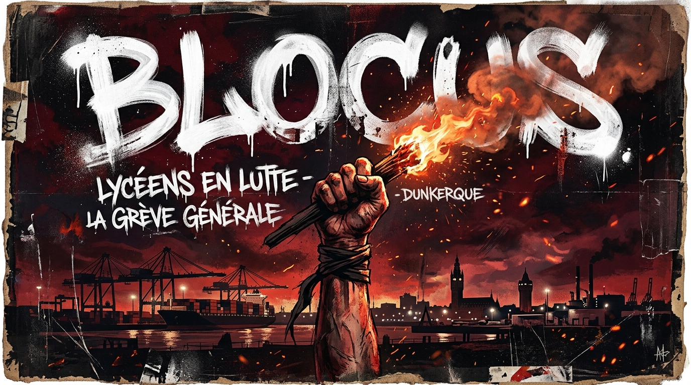
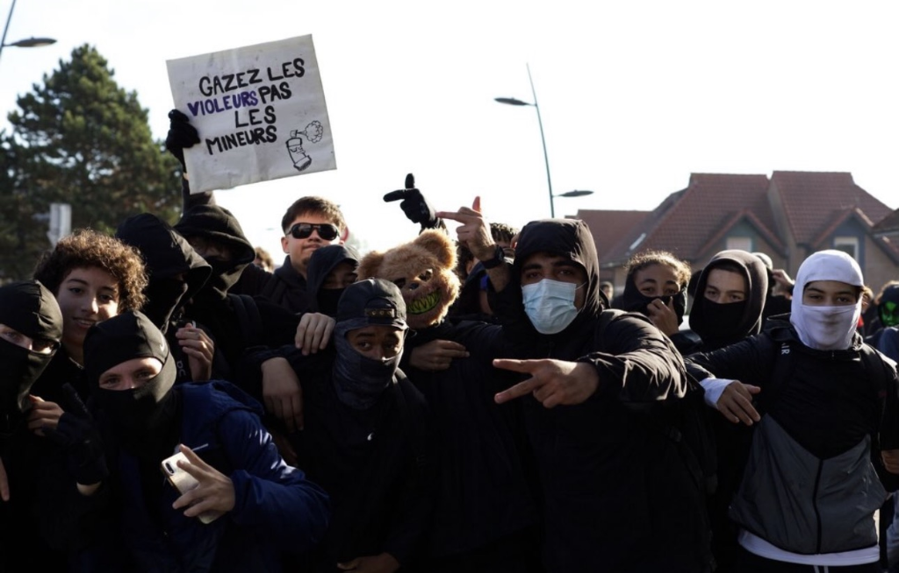
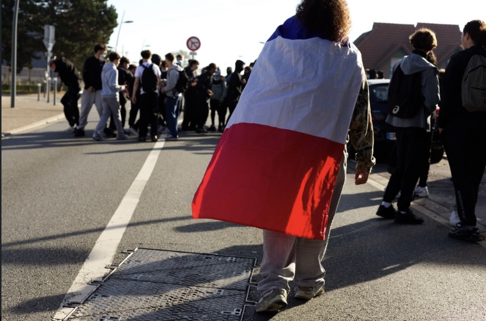
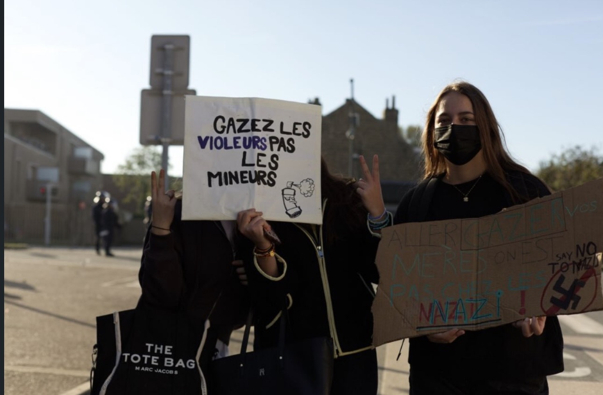
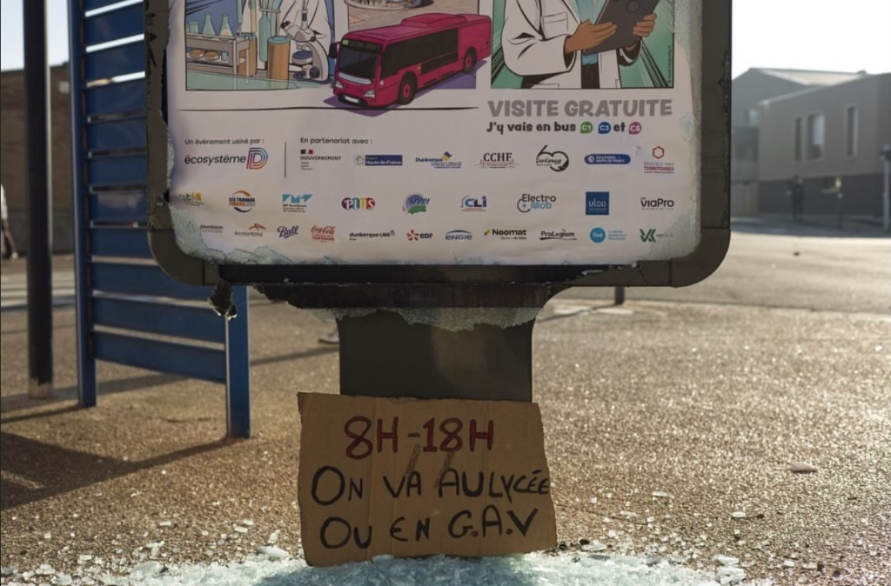
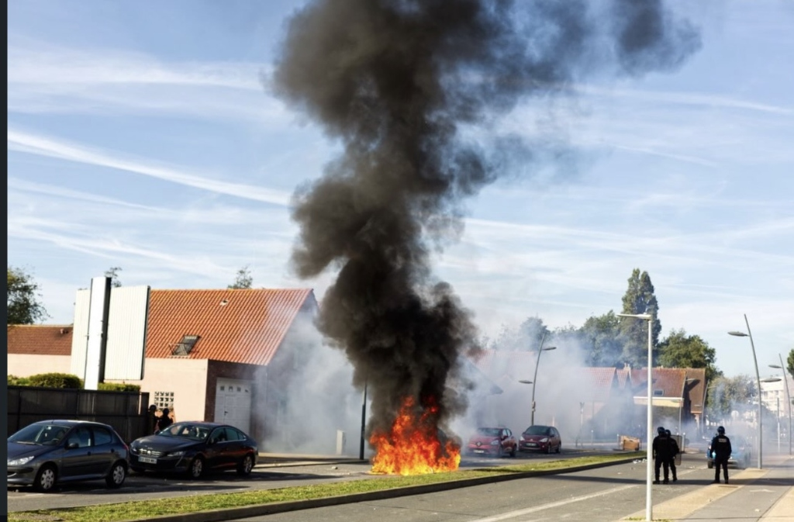

Lycée de l'Europe — Petite-Synthe
Un véhicule 4x4 de la police nationale a foncé vers des lycéens manifestants à Dunkerque. Une enquête judiciaire pour mise en danger d'autrui a été ouverte par le parquet. Une adolescente de 14 ans blessée.
" Nous ne sommes pas des statistiques sur Parcoursup.
Nous ne sommes pas des effectifs à gérer.
Nous ne sommes pas des budgets à couper.
Nous sommes la génération qui refuse de se taire. "
Nous sommes les lycéens du Lycée de l'Europe à Dunkerque (Petite-Synthe). Depuis l'automne 2026, nous avons rejoint le vaste mouvement national de blocus pour défendre notre droit à une éducation publique digne.
Notre lycée, inauguré en 1989, accueille des milliers d'élèves — de la Seconde jusqu'aux BTS et classes prépa PTSI/PT. On nous vante son architecture en briques rouges, ses galeries vitrées, ses courettes thématiques… Mais derrière cette façade, c'est la réalité qui nous frappe : des profs absents non remplacés, des classes à 35 élèves, un avenir bouché par Parcoursup.
On a pris nos portiques. On a occupé les entrées. On ne lâchera pas tant que nos revendications ne seront pas entendues. La lutte continue.
Six exigences non-négociables pour une éducation publique à la hauteur.
Des millions d'heures de cours perdues chaque année faute de remplaçants. On perd des mois de préparation au bac pendant que l'État regarde ailleurs.
Urgence maximale30 à 35 élèves dans une salle, c'est impossible d'apprendre correctement. On réclame des effectifs qui permettent un vrai suivi pédagogique.
Urgence maximaleDes locaux vétustes, du chauffage en panne, des équipements obsolètes. L'État investit des milliards ailleurs — les lycées publics méritent mieux.
Haute prioritéJournées de 8h à 18h avec des trous épuisants. La réforme du lycée a créé un chaos dans les plannings. On veut des rythmes qui permettent d'apprendre.
Haute prioritéUne plateforme opaque qui sélectionne sans transparence. On n'est pas des dossiers à trier — on est des êtres humains. Le droit à la formation doit être garanti.
Urgence maximaleChaque budget, de nouveaux postes supprimés. L'école publique saigne. On exige un plan d'urgence massif, pas des promesses creuses.
Urgence maximaleParti d'Île-de-France et de Guyane, le mouvement de blocus lycéen s'étend rapidement. Des centaines d'établissements rejoignent la mobilisation pour dénoncer le manque de moyens de l'Éducation nationale.
Jean-Bart, Vauban, l'EPID et le Lycée de l'Europe rejoignent la contestation. Les grilles sont bloquées, les cours perturbés, la solidarité s'organise.
Face aux mobilisations, plusieurs lycées dunkerquois — dont le Lycée de l'Europe — basculent en cours à distance. La direction préfère fermer plutôt qu'affronter les élèves mobilisés.
Des vidéos chocs circulent : un 4x4 de la police nationale fonce sur des lycéens manifestants près du lycée Vauban. Une adolescente de 14 ans blessée. Le parquet ouvre une enquête pour mise en danger d'autrui. Enquête administrative de la préfecture du Nord.
CGT, FCPE, FSU, FO, Sud Éducation — les syndicats et parents d'élèves apportent leur soutien au mouvement dunkerquois et appellent à un plan d'urgence pour l'école publique.
Le gouvernement a fait des promesses jugées insuffisantes. Nous maintenons la pression. La lutte ne s'arrête pas jusqu'à des réponses concrètes et mesurables.
Rejoins-nous →De vraies photos prises sur le terrain par les lycéens en lutte. Pas de mise en scène — la réalité brute.





Dunkerque, ville ouvrière et industrielle du littoral du Nord. La solidarité fait partie de l'ADN de cette ville portuaire.
Dans le Dunkerquois, 5 lycées se sont mobilisés côte à côte contre les mêmes injustices. Notre Lycée de l'Europe, inauguré en 1989 à Petite-Synthe, est un établissement polyvalent ancré dans le tissu industriel local : BTS Électrotechnique, Systèmes Numériques, CRSA, et prépas PTSI/PT.
Notre lycée forme les ingénieurs, techniciens et scientifiques qui feront vivre Dunkerque et son bassin industriel. Quand l'État sabote l'Éducation, c'est l'avenir économique du territoire qu'il détruit.
Un véhicule de police fonce vers des lycéens à Dunkerque — une enquête judiciaire pour mise en danger d'autrui est ouverte par le parquet.
Des lycées du Dunkerquois, dont le Lycée de l'Europe, basculent en distanciel face aux risques de blocage — une première dans le secteur.
La CGT et des syndicats locaux apportent leur soutien aux mobilisations lycéennes dans le Dunkerquois, appelant à un plan d'urgence pour l'école publique.
Le blocus, c'est une action collective. Plus on est nombreux, plus on est entendus. Que tu sois lycéen, étudiant, parent ou citoyen — ta place est ici.